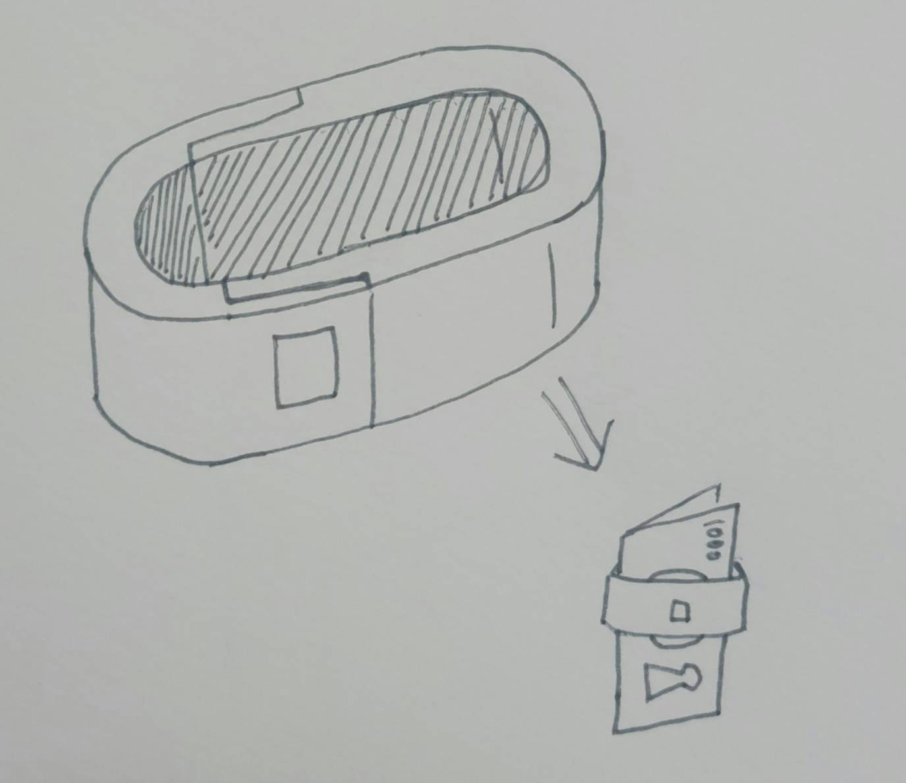
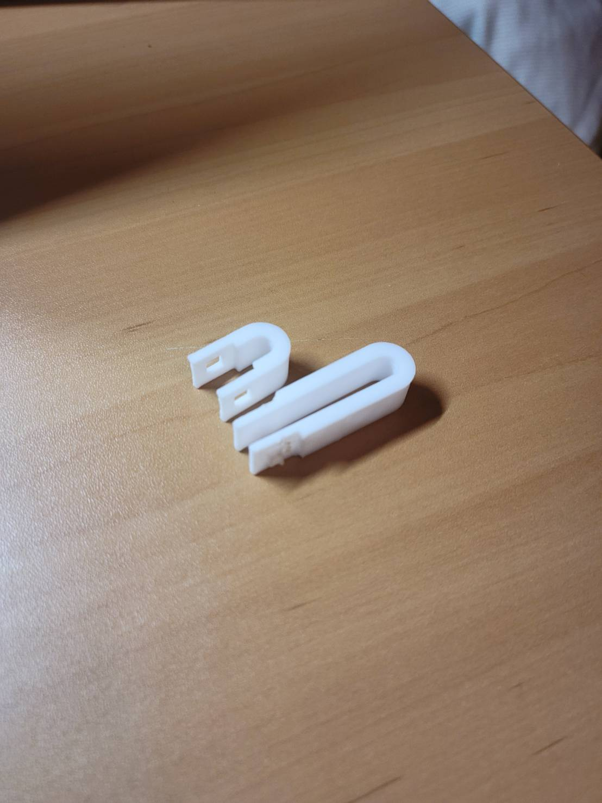
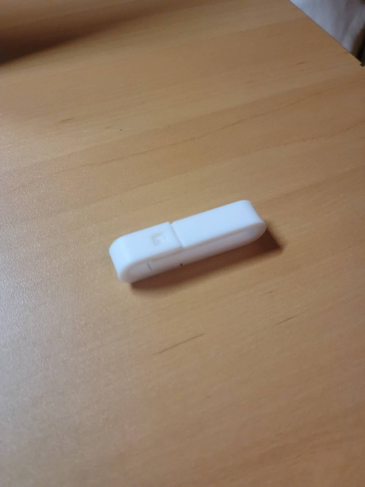
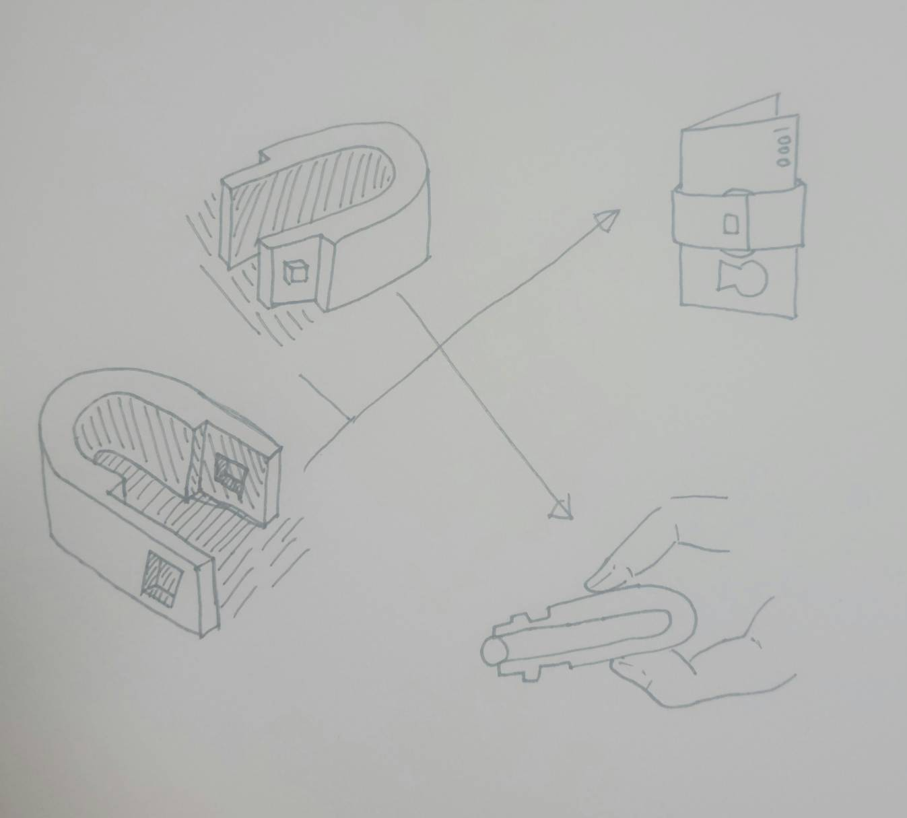
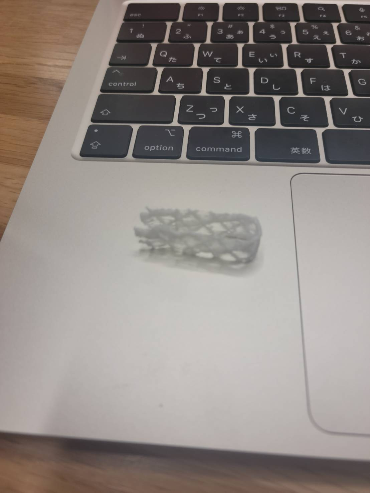
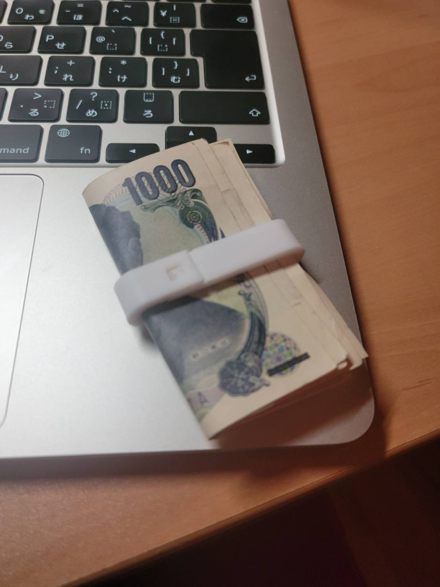

ピンセット制作課題
マネークリップと融合させたピンセット
初期発想

完成作品
 
・設計図ファイル
ピンセットパーツ１ ピンセットパーツ２
作品の説明
今回の作品は、ピンセットとマネークリップを融合させたものとなります。できるだけピンセットの
特有の形を崩さずに、機能面で製作したいという気持ちをコンセプトに考えた結果生まれました。
作品の構成としては２つのパーツから成り立つよう設計しました。
ストーリーボード

メリット
→しっかりマネークリップとして機能できる。
→一応ものも掴める。
デメリット
→ピンセットとしては幅広すぎる
実寸
パーツ１ パーツ２
横幅 40.00mm 横幅 20.00mm
縦幅 12.00mm 縦幅 12.00mm
つまみ幅 6.00mm
高さ 10.00mm 高さ 10.00mm
試作品第一号
・設計図面


当初はこの設計で計画をすすめていたのですが、少し薄すすぎたのか、プリントアウトした時に
チョコレートの紗々のような下記の画像の物体が生成されてしまい失敗に終わりました。
失敗作

そして問題は生成の時だけでなく、その強度にも問題があり、薄すぎてぐにゃぐにゃしてしまいとても掴むことすらできませんでした。
試作品完成版
前回の失敗を活かして今回は厚みをつけて設計することにしました。


改善点
つまみの部分が広すぎるので、細かいものを掴むのには少し限界を感じる。
次制作する時は先をもう少し細く製作したい。（今の技術力では限界）
印刷後

噛み合わせの部分がうまく噛み合わなかったのでヤスリで削り調整せて完成。